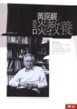
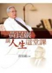

黃崑巖教授著作一覽表
醫眼看人間 出版日期：2000-04-01 |
|
 |
生死關頭見豁達：黃崑巖醫師談生命省思 出版日期：2004-12-01 |
 |
黃崑巖談教養 出版日期：2004-12-20 |
 |
黃崑巖談人生這堂課 出版日期：2005-07-01 |
 |
黃崑巖談人文素養 出版日期：2006-02-01 |
 |
給青年學生的十封信 出版日期：2006-05-16 |
 |
黃崑巖的人生啟思錄 出版日期：2006-11-20 |
 |
黃崑巖回憶錄：成大醫學中心創建始末 出版日期：2007-04-23 |
 |
我不一樣的人生：黃崑巖自傳 出版日期：2008-06-10 |
黃崑巖談有品社會 出版日期：2009-08-27 |
|
 |
醫師不是天使：一位醫師作家的人性關懷 出版日期：2010-01-01 |